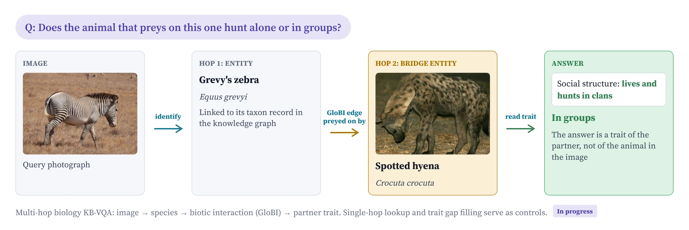

Knowledge-based VQA and retrieval
Retrieval-augmented QA that is measured correctly and knows what to do when its evidence is only partial, from open-domain KB-VQA to knowledge graphs.
3 papers, work in progress- ECCV 2026Identifying and Resolving Pitfalls of Knowledge-Based VQA Benchmarks: Auditing, Repairing, and Augmenting
- AAAI 2027 WorkshopUnder reviewResolvable Insufficiency: When a Retrieved Page Contains Partial Answer
- AAAI 2027 WorkshopUnder reviewWhat Text Leaves Out: Drug Contraindications Are Under-Documented, and Language Models Inherit the Gap